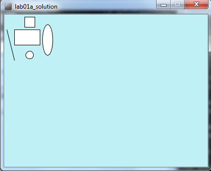
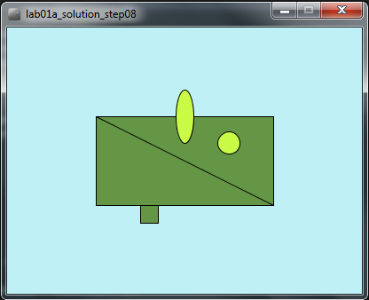
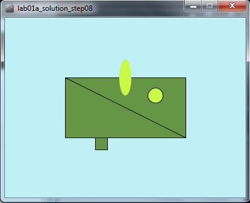

Objectives
On completion of this lab you should:
be more familiar with the PDE (Processing Development Environment).
be able to resize and colour your display window.
be able to add colour to basic shapes.
Changing the look of the display window
- In the previous lab, you wrote code that looked something like this:
rect(20,30,50,30);
rect(40,5,20,20);
line(5,30,20,90);
ellipse(85,50,20,60);
ellipse(50,80,15,15);- Create a new sketch and copy the above code into it. When you run it, the output should be:

- We can see that the available space in the window is at a minimum and the window is quite small. There is also no added colour. We will make changes to this code to make the window larger and add colour.
size() function
The size() function sets the size of the display window in pixels. It has to be the first line of code in your sketchbook (there is an exception to this that we will cover later).
The syntax of the size function is:
size(w, h)
w = width of the display window
h = height of the display windowIf the size function is not called, the window will be set to a default size of 100x100 pixels.
Enter the following code in your open sketchbook:
size(400,300);Run your code; your window should now be larger.
background() function
The background() function sets the background colour of the display window.
The syntax of the background function is:
background(r,g,b)
r = red colour (a number between 0 and 255 inclusive)
g = green colour (a number between 0 and 255 inclusive)
b = blue colour (a number between 0 and 255 inclusive)The background function uses a combination of RGB (red, green and blue) values to display a colour on the window.
Visit the following website and choose a colour you like:
In your open sketchbook (after the size() function), type in the background() function, passing the RGB values for your selected colour as parameters.
For example, we chose a light blue:
background(190,240,245);
Changing the look of the shapes
- You should have the following code (or something similar) in your open sketchbook:
size(400,300);
background(190,240,245);
rect(20,30,50,30);
rect(40,5,20,20);
line(5,30,20,90);
ellipse(85,50,20,60);
ellipse(50,80,15,15);- When it runs, you should have something that looks like this:
- Change the coordinates of your shapes and the size of your rectangle so that your output is similar to the following screen shot:

fill() function
The fill() function fills shapes with a chosen colour. We will use the RGB colours to select a colour. All shapes that are drawn after the fill function is called, will be filled with the chosen colour.
The syntax of the fill function is similar to the background function and is:
fill(r,g,b)
r = red colour (a whole number between 0 and 255 inclusive)
g = green colour (a whole number between 0 and 255 inclusive)
b = blue colour (a whole number between 0 and 255 inclusive)- In your open sketchbook, enter the following code before your draw any shapes:
fill(100,150,70);Run your code; all your shapes should be coloured dark green.
Now we will set the ellipses to be a different colour i.e. light green. Enter the following code before your first ellipse() function call.
fill(200,250,70);Order of statements matter
- Note how the order of statements matter. All shapes drawn after the first fill() function is called are coloured dark green. All shapes drawn after the second fill() function is called are coloured light green (see picture below):

Try moving the first ellipse() function call before the second fill() function call. What happened? Only the second ellipse is coloured light green.
Move the ellipse function back to it's original location so both ellipses are coloured light green.
noStroke() function
A stroke is the outline of a shape. The noStroke() function disables the outline on shapes that are drawn after the function is called.
In your open sketchbook, enter the following code before your draw any shapes:
noStroke();- When you run your code, you should have something similar to this:

stroke() function
The stroke() function enables the outline on shapes that are drawn after the function is called. When you call stroke(), you need to specify a colour.
The syntax of the stroke function is also similar to the fill and background function and is:
stroke(r,g,b)
r = red colour (a whole number between 0 and 255 inclusive)
g = green colour (a whole number between 0 and 255 inclusive)
b = blue colour (a whole number between 0 and 255 inclusive)If we wanted all shapes except the first ellipse (the oval) to have a stroke, you should make the following changes:
- remove the call to noStroke() that you put into your code in the previous step.
- call noStroke() before the first ellipse is drawn.
- call stroke(0,0,0) before the second ellipse is drawn to enable a black stroke on the second ellipse.
- Your output should look similar to this:

strokeWeight() function
The strokeWeight() function allows you to choose the thickness of a line/outline on shapes. The chosen thickness will apply to all lines/shapes that are drawn after the function is called. The thickness is specified in pixels and the default thickness is 1 pixel.
If we wanted all shapes to have thickness of 3 pixels, enter the following code before you draw any shapes:
strokeWeight(3);- Your output should look similar to this:

Exercises
- The exercises are typically based on the functions we covered in the previous steps in this lab.
- For each exercise listed below, open a new sketchbook.
- For the challenge exercises you may need to visit the Processing website for additional information.
Exercise 1
- Draw a stick man as shown in the picture below:

Exercise 2
- Replicate the basic Microsoft logo as shown in the picture below:

- Hint: You could use this website to find the exact Microsoft RGB colours in their logo.
Exercise 3
- Replicate the beats (Dr. Dre) logo as shown in the picture below:

Challenge Exercise 1
- Convert the Microsoft logo into a grayscale logo as shown in the picture below:

- Hint: the easiest way to do this is to use the grayscale fill function as opposed to the RBG version of it. The grayscale version of fill takes one parameter, a number between 0 and 255 inclusive. This numver represents a shade of gray between black (0) and white (255) e.g.:
fill(150); //sets a medium gray colour for all shapes drawn after it
fill(0); //sets a black colour for all shapes drawn after it
fill(255); //sets a white colour for all shapes drawn after itChallenge Exercise 2
- Write the code that will draw the typical control buttons you would see on a DVD player. An example image would be:

- Hint: you will need to read up on the triangle() function on the Processing website.
Solutions
The solutions for this lab can be found here.
The file is in Zip format, so when you download it, you will need to unzip it. If you don't have unzipping software installed on your computer, 7Zip is a good choice.